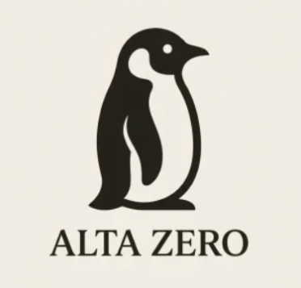
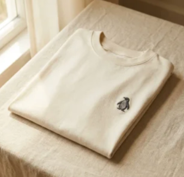

A house of blanks,
and that is the point.
Every piece we make is beautiful, heavy in the hand, cut clean, and left nearly unmarked. The garment stays quiet so you can be the loud part.
We are a house of blanks, and that is the point. Every piece we make is beautiful, heavy in the hand, cut clean, and left nearly unmarked. We do not shout across the chest. We spend the noise you would have worn out loud on the things you feel instead. The weight of the cotton. The fall of the shoulder. The one tag at your neck that tells you where it came from and why it exists. The garment stays quiet so you can be the loud part.

Our whole story sits in one small animal. Picture a colony of penguins, all of them turning together toward the sea, because that is what the colony does. One of them stops. It looks the other way, toward the mountains, toward the high cold ground nobody walks to, and it goes. That is the one we build for. Not the loudest, not the rebel for the sake of it, just the one who quietly decided the summit was more interesting than the crowd. We named the feeling Alta Zero. The high point, and the fresh start, in the same breath.
Alta Zero stands for beginning again on purpose. Zero is not empty, it is the base of the climb, the reset you choose, the clean morning before the noise. We put that idea into clothing you can actually live in, wear thin, and reach for on the days that matter. Start from zero. Go higher. We mean it as a way to get dressed and a way to move through the year.

What we keep saying
- 01Start from zero. Go higher.
- 02The mark is on the tag. That was always the plan.
- 03A house of blanks, and the blanks say plenty.
- 04The colony went to the sea. We went to the mountains.
- 05Zero is not empty. It is the base of the climb.
- 06Wear the garment. Skip the billboard.
- 07Quiet on the outside. Everything on the inside.
- 08Go the other way. It is less crowded up here.
- 09The reset you choose beats the one you are handed.
- 10No logo doing the talking. Just the cut, the cloth, the care.
Shipping and FAQ
How does shipping work, and how long until my piece arrives? +
Every Alta Zero piece is made to order, so nothing sits in a warehouse waiting. Give it about 5 to 8 business days to be made, then standard shipping on top. You get a tracking link the moment it leaves us.
How do the pieces fit? +
True to size with a clean, considered cut, not boxy and not skin tight. If you like a little more room, size up one. Every product page carries the exact measurements, and the neck tag confirms your size once it arrives.
What are they made of? +
Heavy, honest cloth and nothing cheap. Combed cotton in the tees, higher GSM in the heavyweights, real weight you feel the second you pick it up. The exact fiber and weight live on the hangtag and the product page.
What is your return policy? +
Since each piece is made to order, we look at returns case by case. If it arrives flawed or the size is wrong, we make it right, fast. Reach out within 14 days and we will take care of you.
What is the No. 004 / 114 number on the tag? +
The archive is finite. There are 114 pieces in the house, and each one holds its own number. Yours is not a serial code, it is a place in a collection. When a piece retires, its number retires with it.
Why sell blanks instead of graphics? +
Because a blank has nowhere to hide. No logo doing the work, just the cut, the cloth, and the care at your neck. We think the best thing you can wear is a garment that lets you be the loud part. The mark is on the tag. That was the whole idea.